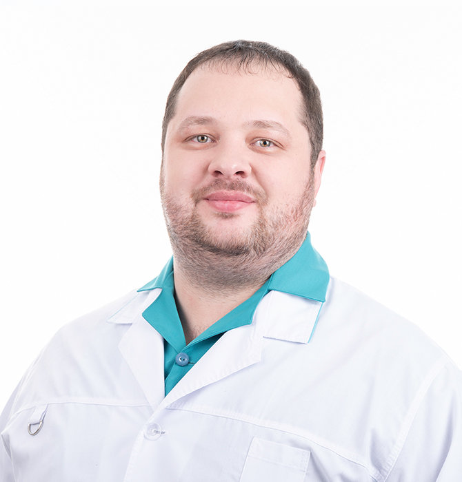

Буров Егор Владимирович работает в сфере ортопедии и травматологии. Он работает с болезнями опорно-двигательного аппарата. Прогрессивные техники, применяемые врачами этого профиля, позволяют компенсировать не только приобретенные травмы и деформации костей, но и врожденные.
Опыт и достижения : Общая практика, Высшая категория. Профессиональный стаж 15 лет
Образование
- Новосибирский государственный медицинский университет (педиатрия) (2008 г.).
- Новосибирский государственный медицинский университет (травматология и ортопедия) (2009 г.).
- Курсы повышения квалификации ФГБУ «Российский научный центр «Восстановительной травматологии и ортопедии» имени академика Г.А. Илизарова». Курс «Гнойная остеология», г. Курган (2012 г.).
- Новосибирский государственный медицинский университет (травматология и ортопедия) (2014 г.).
- "Базовый курс по артроскопии коленного сустава”, г. Москва (2014 г.).
- AO Trauma базовый курс – «Принципы лечения переломов» (2015 г.).
- Cadaver-курс «Авторский курс по артроскопии коленного сустава Зайцева Р.В.», г. Казань (2015 г.).
- Новосибирский государственный медицинский университет (травматология и ортопедия) (2019 г.).
- Cadaver-курс «Базовый курс по артроскопии плечевого сустава», г. Казань (2016 г.).
- Cadaver-курс « Хирургические доступы при повреждениях костей таза», г. Екатеринбург (2016 г.).
- Cadaver-курс «Базовый курс по артроскопии локтевого и голеностопного суставов», г. Казань (2016 г.).
- «Лечение переломов проксимального отдела бедренной кости интрамедуллярными штифтами INTERTAN», г. Екатеринбург (2017 г.).
- Cadaver-курс « Артоскопическая хирургия плечевого и коленного суставов», Германия г. Мюнхен (2017 г.).
- Cadaver-курс « Хирургическое лечение патологии стопы и голеностопного сустава», Германия г. Мюнхен (2018 г.).